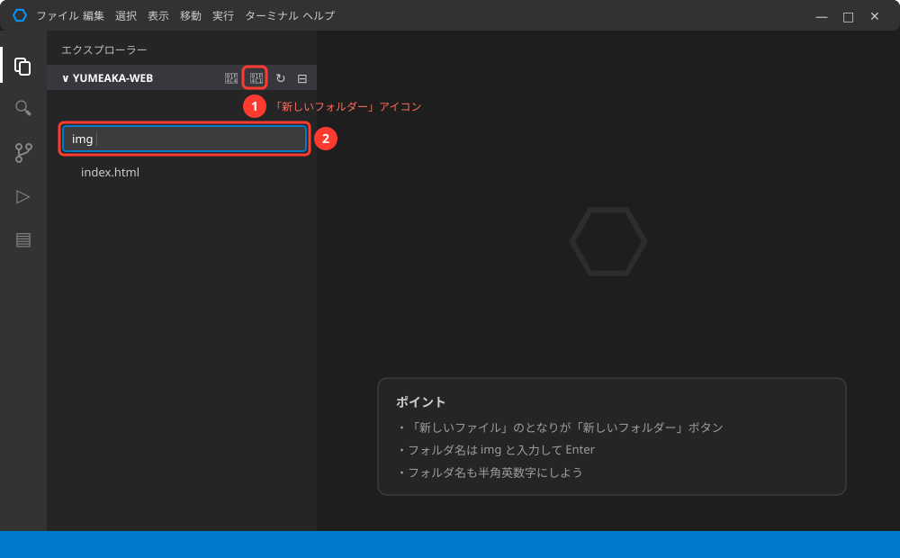
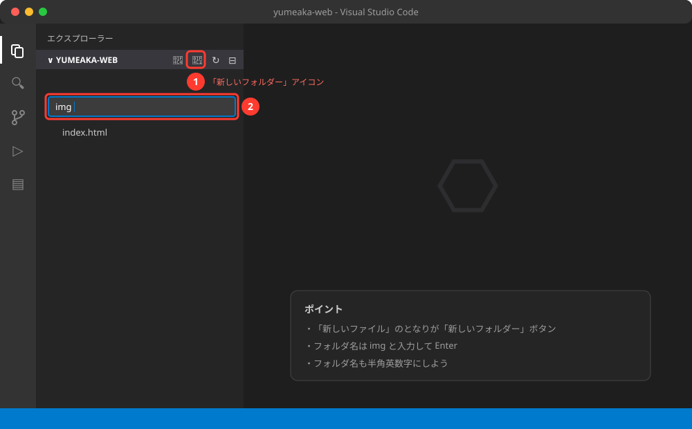
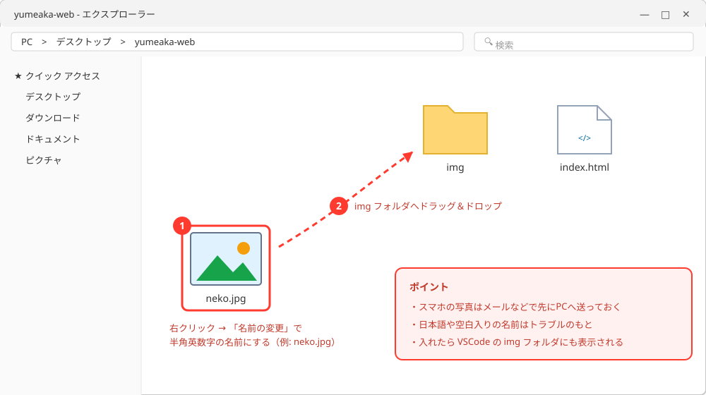
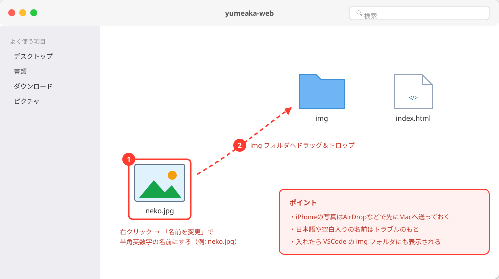

HTML基礎 〜ページに情報をのせる〜
🎯 この章でできるようになること
- HTMLの「入れ子」のルールを理解して、正しい構造で書ける
- 見出し・段落・リストで、読みやすいページを組み立てられる
- リンクと画像を入れた「好きなもの紹介ページ」を作れる
第1章では、はじめてのHTMLファイルをブラウザに表示できたね。
この章では、HTMLのルールとよく使うタグを覚えて、
「文字だけのページ」から「リンクや画像のあるちゃんとしたページ」にレベルアップしよう。
2-1. HTMLは「入れ子」でできている
第1章で書いたコードを思い出してみよう。<html> の中に <head> と <body> があって、
<body> の中に <h1> や <p> があったよね。
このように、HTMLは箱の中に箱を入れるような構造になっています。
これを入れ子（いれこ）と呼びます。
head は舞台裏、body が舞台
マトリョーシカ人形のように、外側の箱が内側の箱を完全に包みこむのがルール。
入れ子の大事なルール: 「またぎ」は禁止
入れ子にはひとつだけ絶対のルールがあります。
内側のタグは、外側のタグの中で閉じること。
途中で交差（またぎ）してはいけません。
入れ子が深くなるときは、内側のタグを字下げ（インデント）して書くと構造が見やすくなるよ。
VSCodeでは Tab キーで字下げできます。
2-2. 見出しと段落で文章を組み立てる
見出しタグは <h1>〜<h6> の6段階。
数字が小さいほど大きな見出しです。
新聞の「大見出し・中見出し・小見出し」と同じで、
大きさではなく「文章の階層」を表します。
<h1>ぼくの好きなもの</h1>
<h2>ゲーム</h2>
<p>今いちばんハマっているのはマインクラフトです。</p>
<h2>食べもの</h2>
<p>横須賀といえば海軍カレー。月に1回は食べます。</p>| ルール | 理由 |
|---|---|
<h1> はページに1つだけ | 「このページのテーマ」を表す特別な見出しだから |
| h1 → h2 → h3 と順番に使う | h1の次にh4…と飛ばすと、階層がわからなくなる |
文章は必ず <p> に入れる | タグの外に裸で書くと、あとでCSSで飾れなくて困る |
2-3. リスト（箇条書き）
「好きな食べものベスト3」のような箇条書きは、リストタグを使います。
リストには2種類あって、順番が関係ないなら ul、順番に意味があるなら ol を使い分けます。
<!-- ul: 順番なしリスト（点がつく） -->
<ul>
<li>カレーライス</li>
<li>ラーメン</li>
<li>おすし</li>
</ul>
<!-- ol: 順番ありリスト（番号がつく） -->
<ol>
<li>材料を切る</li>
<li>いためる</li>
<li>煮こむ</li>
</ol>ul は unordered list（順番なし）、ol は ordered list（順番あり）、li は list item（リストの1項目）の略。li は必ず ul か ol の中に入れて使う（入れ子ルール！）。
<!-- 〜 --> で囲んだ部分は画面に表示されないメモ。上のコード例でも使っているよ。
未来の自分へのメモに便利。
2-4. リンクを張る 〜「属性」の登場〜
Webの最大の発明がリンク（クリックすると別のページに飛ぶ仕組み）です。
リンクは <a> タグで作りますが、「どこに飛ぶか」はタグ名だけでは伝えられません。
そこで登場するのが属性（ぞくせい）です。
開始タグの中に
名前="値" の形で書く。値は必ず
"（ダブルクォート）で囲むクセをつけよう。
<p>
調べものには
<a href="https://developer.mozilla.org/ja/">MDNのサイト</a>
が便利です。
</p>
URLは https:// から全部コピペするのが確実。
ブラウザのアドレスバーをクリックしてコピーしよう。
2-5. 画像をのせる
画像は <img> タグでのせます。<img> には、これまでのタグと違う特徴が2つあります。
- 終了タグがない（
</img>は書かない）。
文字をはさむ必要がないタグだから - 「どのファイルを表示するか」を
src属性で指定する
まずは画像ファイルの置き場所を用意しよう。
手順は3ステップ。
VSCodeの左側のエクスプローラーで、「新しいフォルダー」アイコンをクリックして img という名前のフォルダを作ります。
画像はここにまとめると迷子にならないよ。


使いたい写真（スマホで撮ってPCに送った写真や、自分で描いた絵など）を、
エクスプローラー（Windowsのファイル画面）Finderで
yumeaka-web の中の img フォルダにドラッグ＆ドロップします。
ファイル名が日本語や空白入りなら、neko.jpg のような半角英数字の名前に変えてから入れよう。


<img src="img/neko.jpg" alt="うちのネコが昼寝している写真">保存してブラウザで確認。
写真が表示されたら成功！
img/neko.jpg は「同じフォルダにある img フォルダの中の neko.jpg」という意味。
目の不自由な人が使う読み上げソフトもここを読む。
「誰にでも伝わるページ」にするために、必ず書こう。
2-6. 💪 やってみよう 〜好きなもの紹介ページ〜
この章のまとめとして、「自分の好きなもの」を紹介するページをゼロから作ります。
講習で完成しなくても大丈夫、続きは家でやろう。
課題1: 骨組みを作ろう
新しいファイル favorite.html を作って、次の内容のページを作ろう。
- ページ全体のタイトル（
h1）: 「〇〇の好きなもの」 - 好きなもののジャンルを2つ以上（
h2）: 例「ゲーム」「音楽」 - それぞれのジャンルに説明の段落（
p）を1つ以上 - どこかに箇条書き（
ulとli）で「ベスト3」を入れる
ヒントを見る
第1章で書いた <!DOCTYPE html> からの骨組みをそのまま使って、<body> の中身だけ変えればOK。<title> も忘れずに変えよう。
課題2: リンクを足そう
紹介したものに関係する公式サイトなどへのリンク（a タグ）を1つ以上足そう。
リンクの文字は「ここ」ではなく「公式サイトはこちら」のように飛び先がわかる言葉にするのがプロのマナー。
ヒントを見る
ブラウザでそのサイトを開いて、アドレスバーのURLをコピー → <a href="コピーしたURL">説明の文字</a> の形で p や li の中に書こう。
課題3（チャレンジ）: 画像をのせよう
2-5の手順で、好きなものの写真（自分で撮ったもの・描いたもの）を1枚以上のせよう。alt には「写真を見ていない人にも伝わる説明」を書くこと。
ヒントを見る
①写真を半角英数字の名前にして img フォルダへ ②<img src="img/ファイル名" alt="説明"> を書く。
表示されないときは2-7のつまずきポイントへ。
2-7. 🚨 つまずきポイント集
画像が表示されず、こわれたアイコンや alt の文字が出る
原因: src のパスかファイル名がまちがっている（HTMLで一番多いエラー！）。
直し方: ①つづりが1文字ずつ合っているか ②img/ を付けたか ③拡張子（.jpg と .jpeg、.png）が合っているか、の順に確認。
VSCodeのエクスプローラーに見えている名前と見比べよう。
大文字・小文字の違いもアウトだよ。
リンクをクリックすると「ページが見つかりません」になる
原因: href のURLが欠けている。
手打ちして https:// が抜けるケースが多い。
直し方: ブラウザのアドレスバーからURLを全部コピペし直そう。
リストの点（・）が出ない／変なところに文字が出る
原因: <li> を <ul>（または <ol>）で包み忘れている。
直し方: li の集まりの前後に <ul> と </ul> があるか確認。
入れ子ルール（2-1）を思い出そう。
そこから下が全部リンク（青い文字）になってしまった
原因: </a>（終了タグ）の書き忘れ。
ブラウザは「まだリンクが続いてる」と思ってしまう。
直し方: リンクにしたい文字の直後に </a> を入れる。
属性を書いたのに効かない
原因: "（ダブルクォート）の閉じ忘れ、= の抜け、終了タグに属性を書いている、のどれかが多い。
直し方: 名前="値" の形になっているか、開始タグの中に書いているかを確認。
VSCodeの色分けが変になっていたら、そこがヒント。
💡 15分たっても直らないときは、次の「AIを味方につけよう」の方法で相談してみよう。
2-8. 🤖 AIを味方につけよう
この章でのAIの使い所
✅ 良い使い方 — まず15分自分で考えてから
- 表示くずれの原因さがし: 自分のコードを貼って「どこがおかしい？」
と聞く（入れ子ミスの発見が得意） - タグの使い分け相談: 「この場合は ul と ol どっち？」
のような判断を聞く - 直した理由を聞く: 直してもらって終わりではなく「なぜそれで直るのか」まで聞くと力がつく
そのままコピペで使えるプロンプト（AIへの指示文）の例:
画像を表示したいのに、こわれたアイコンが出ます。
フォルダの中は index.html と img フォルダ、img の中に neko.jpg があります。
コードはこれです:（imgタグの行を貼る）。
原因の見つけ方を順番に教えてください。
🚫 やめておこう
- 「好きなもの紹介ページを作って」と丸投げする（それはAIの好きなものページ。
自分の手で作るから意味がある） - AIが直したコードを動かして確かめずにそのまま使う（必ずブラウザで表示して確認！）
2-9. ✅ チェックリスト
全部チェックできたら第2章クリア！
🎉 次回はCSSで、今日作ったページに色やデザインをつけていくよ。
2-10. 📚 もっと知りたい人へ
- <a> タグの解説（MDN） — リンクのくわしい使い方
- <img> タグの解説（MDN） — 画像タグの属性いろいろ
- HTMLで内容を構造化する（MDN） — この章の内容をもっと深く